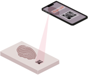

Visuelle
Handwerksverfahren
Durch einen QR-Code lassen sich die Objekte des Werkstoffarchives in der Bibliothek des Sitterwerkes intuitiv entdecken. Die Webseite hat den Fokus auf die Verfahren der Objekte gelegt. Materialien und Verfahren lassen sich bei keinen Objekten trennen, deshalb gibt es Querverweise zum Material-Archiv.ch. Weiterer Höhepunkt der Webseite sind verwandte Verfahren und Techniken auf der Übersicht miteinander zu vergleichen.
